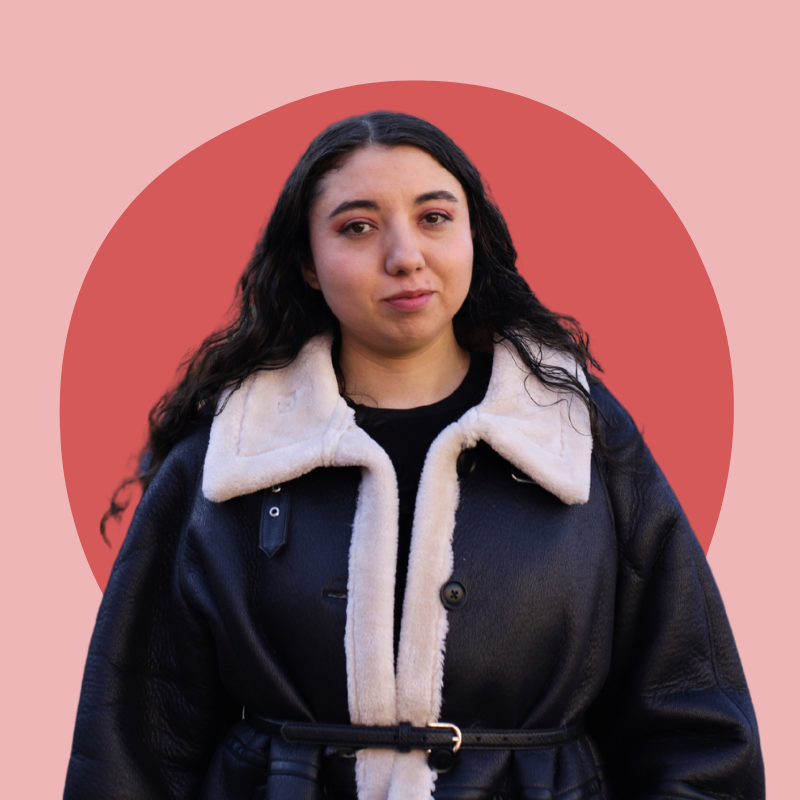
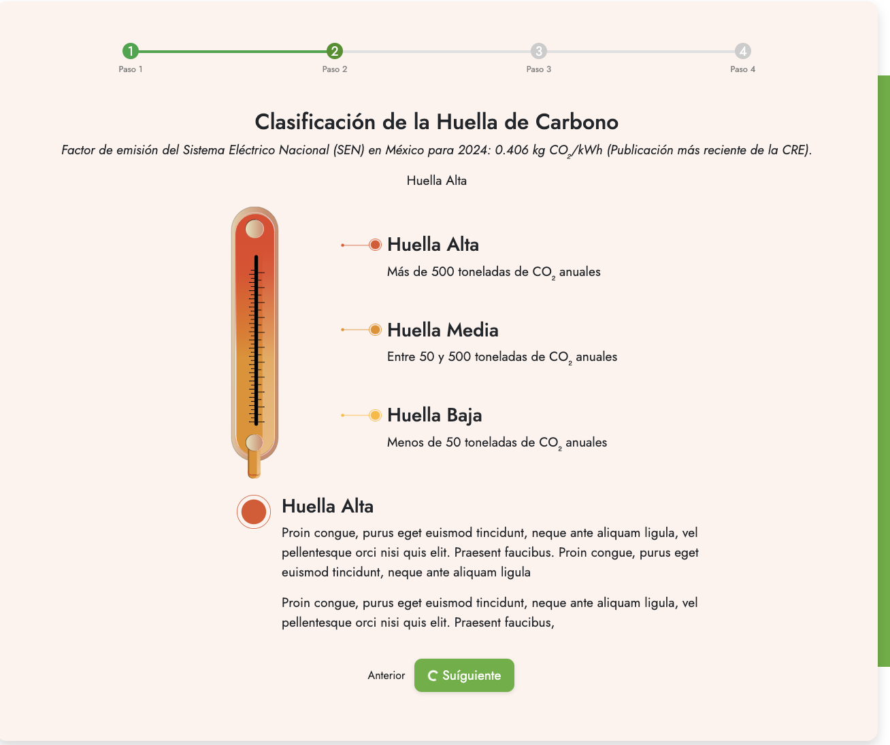
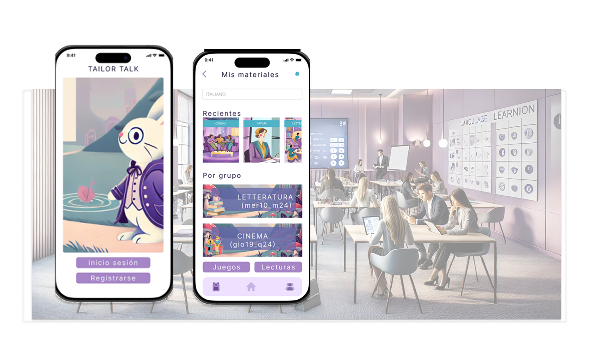

Entiendo antes de ejecutar
Investigo usuarios, procesos y restricciones para definir el problema correcto antes de elegir la solución.
UX · Producto · IA aplicada · Frontend
Investigo, diseño y construyo soluciones digitales. Mi fortaleza es conectar las necesidades de las personas con los objetivos del negocio y usar la IA para avanzar de la idea a un prototipo útil.

Pienso en sistemas Aprendo construyendoActualmente Analista de Experiencia Digital en Tuto Power
CDMX · 2026Entender → Diseñar → Prototipar → Validar → Implementar
Por qué yo / por qué Innavanti
“Le apuesto más a la persona que al conocimiento. Una persona se puede capacitar, pero cómo es, es.”
Investigo usuarios, procesos y restricciones para definir el problema correcto antes de elegir la solución.
Conecto lenguaje de negocio, experiencia, contenido y tecnología para que una idea pueda implementarse.
Uso IA como copiloto, prototipo en código y actualmente fortalezco frontend con The Frontend Developer Career Path de Scrimba.
Trabajo seleccionado
Cada caso muestra una forma distinta de pasar de una necesidad ambigua a una experiencia concreta.

01Transformé un cálculo técnico del sector energético en un recorrido guiado, educativo y accionable para usuarios empresariales.
Elige una opción para comenzar
Checklist guardada Checklist de hoy Actividades recurrentesUna app responsive para reducir la carga cognitiva al organizar tareas recurrentes. Diseñada desde UX y construida con IA + código.
Un producto mobile-first que convierte un proceso editorial largo en tareas visibles, progreso medible y próximos pasos claros.

04Investigación y diseño de una experiencia de aprendizaje de idiomas que adapta materiales al nivel, contexto y objetivo del estudiante.
Más exploraciones
CV interactivo · actualizado septiembre 2026
Tuto Power · Energía
Analizo recorridos y necesidades del negocio; diseño flujos, prototipos y contenidos; e integro IA para hacer más claros y eficientes los productos y procesos digitales.
Tuto Power · Energía
Rediseño web B2B, calculadora de huella de carbono, sistemas de contenido, investigación con stakeholders, prototipos, pruebas y experiencias educativas.
Proyectos independientes
Diseño de apps educativas, productos de organización, investigación UX y prototipos funcionales para convertir conocimiento complejo en experiencias comprensibles.
Alcaldía Miguel Hidalgo
Análisis de audiencias, contenido digital, comunicación estratégica y coordinación de materiales orientados a necesidades ciudadanas.
Scrimba · HTML, CSS, JavaScript, accesibilidad y construcción de productos web.
Founderz × Microsoft · IA aplicada, automatización, ideación y prototipado.
Investigación, arquitectura de información, interacción, prototipado y validación.
Universidad Latinoamericana · narrativa, investigación y estrategia.
Angloeducativo · pedagogía, inglés y diseño de experiencias de aprendizaje.
Entrevistas · análisis cualitativo · desk research · benchmarking · journey maps · jobs-to-be-done
Arquitectura de información · flujos · wireframes · prototipos · UX writing · diseño conversacional · accesibilidad
HTML · CSS · JavaScript · WordPress · Construct 3 · Figma · Git/GitHub en aprendizaje activo
Prompt design · copilotos de código · ideación · síntesis · flujos con humano en el loop · documentación
Español nativo · Inglés C1 · Italiano B2 · Francés B1
Cómo trabajo
Diseño con empatía, lenguaje claro y respeto por la energía mental de las personas.
Conecto cada decisión con un objetivo de negocio, una necesidad y una forma de validarla.
No finjo saberlo todo. Aprendo rápido, documento y convierto lo aprendido en algo que funciona.
Siguiente paso
Si buscas a alguien con pensamiento de producto, sensibilidad humana y hambre real por construir, me encantará conversar sobre el reto.